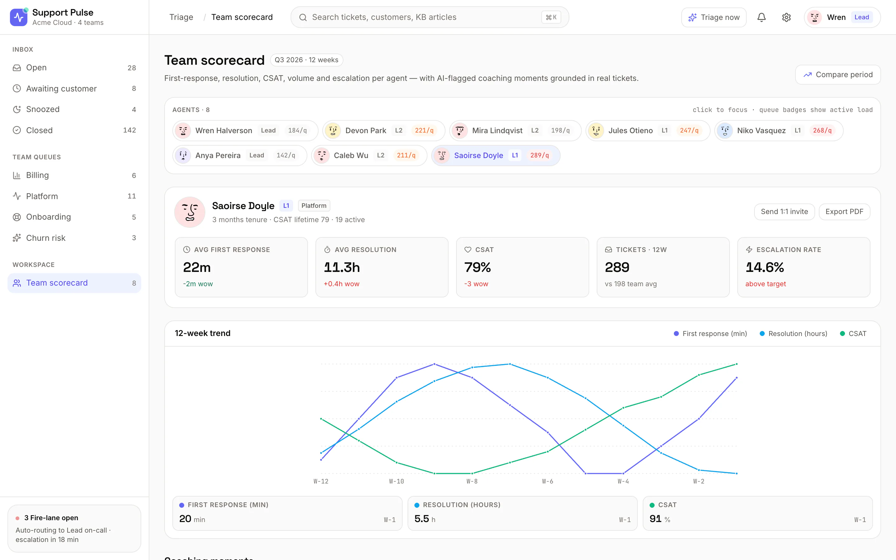
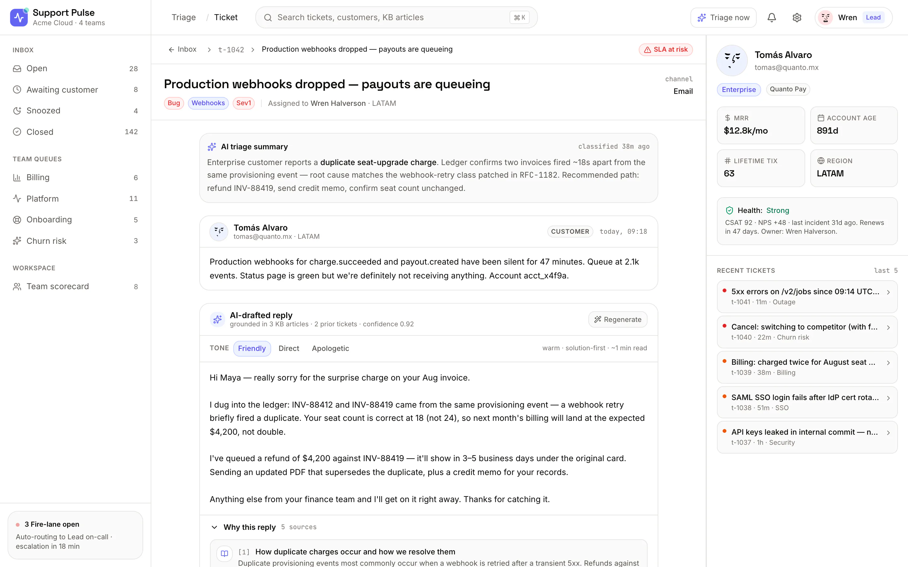

Fire
Outages, security exposure and churn risk. Auto-routed to the on-call lead with a countdown to escalation.
Support Pulse classifies every incoming ticket into AI urgency lanes, drafts a cited reply in your team's tone, and watches per-agent trends — so drift gets caught before an SLA slips.
Support Pulse reads each incoming ticket — content, customer, history — and classifies it into one of five urgency lanes with a confidence score. Repeat low-stakes tickets resolve themselves.
Outages, security exposure and churn risk. Auto-routed to the on-call lead with a countdown to escalation.
Blocking bugs, billing disputes and blocked Enterprise accounts that need a human today, not tomorrow.
Standard how-to and configuration questions, queued with a drafted reply already waiting for review.
Non-urgent feedback and nice-to-haves that shouldn't crowd out the work that's actually on the clock.
Repeat low-stakes tickets — reset links, invoice PDFs — closed automatically with a cited reply.
Auto-resolution keeps the queue honest. When the same low-stakes ticket shows up again and the KB has a confident answer, Support Pulse handles it end to end — so your team spends its attention on the Fire and High lanes that actually move an SLA.
Three moves happen the instant a ticket arrives — no rules to hand-tune, no macros to maintain.
The ticket is classified into an urgency lane with a confidence score, pulling in customer tier, MRR and history to decide how hard it should push.
A reply is written in your team's tone — Friendly, Direct or Apologetic — grounded in KB articles and prior tickets, with every source cited under the draft.
Fire tickets go straight to on-call with an escalation timer; repeat low-stakes ones auto-resolve. Everything else lands in a queue with the draft ready to send.
Per-agent scorecards track first response, resolution, CSAT and escalation rate — with 12-week trend lines that surface the moment a metric starts sliding, not weeks after it already has.
First response, resolution, CSAT and escalation rate — each against team average and target.
A rolling window per metric so you see direction, not just today's snapshot.
Every flagged moment links back to the real ticket behind it — a 1:1 that writes itself.
From the live triage inbox to a single ticket's cited reply — here's what an agent actually sees.
The live inbox groups open tickets under Fire, High, Normal and Low — each with the customer, plan tier, tags and a suggested action. An SLA-at-risk rail on the right counts down the ones about to breach.

Pick an agent and read first response, resolution, CSAT, ticket volume and escalation rate against team average — with a 12-week trend chart underneath and coaching moments grounded in real tickets.

Open a ticket and you get an AI triage summary, the customer's message, and a drafted reply in a chosen tone — grounded in KB articles and prior tickets, each source listed under "Why this reply."

A customer sidebar rides along with every ticket — plan tier, MRR, account age, lifetime volume, health and recent tickets. The urgency lane already knows all of it, so a $12.8k/mo Enterprise account never gets treated like a trial.
Revenue-weighted urgency, so the biggest accounts don't wait behind trials.
Recent tickets surface a pattern — three webhook issues in a day reads differently than one.
We'll walk your team through live triage, cited drafts and the scorecards — on tickets that look like yours.